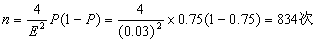

观测次数
从经济的观点出发，决定观测次数应考虑的原则是：在满足观测精度的前提下，确定合理的观测次数。具体地说，观测次数根据观测目的和所要求的精度来确定。观测次数的计算方法有理论公式法和图表法。
(一)理论公式法
由绝对误差E或相对误差S求观测次数：
式中，n：观测次数；μ：置信系数；E：绝对精度；P：观测事件发生率。
当可靠度为95%时，μ
一般取为2，则：
或：
式中S为相对精度。
由绝对精度E或相对精度S求观测次数时，观测事件发生率P的值是根据资料、经验或通过足够多次观察来确定。
例如，经过100次观察，某设备的开动率为75%，如果绝对精度取为±3%，则观测次数为：

(二)图表法
用图表法求观测次数，不仅简单方便，而且能保证足够的精度。
利用表10-3和表10-4可以在作业发生率已定的条件下，根据观测目的、观测精度(相对精度或绝对精度)确定观测次数。
表10-3 根据观测目的确定观测次数
|
观测目的 |
发生率P(%) |
绝对误差(%) |
相对误差(%) |
观测数(n) |
|
预备调查(为了确定该观测的观测数和观测项目，推断发生率) |
200~400 |
|||
|
管理问题点的调查(停止、闲着、搬运等的比率) |
15 30 |
±3 ±3 |
±20 ±10 |
600 约900 |
|
改进作业 |
30 |
±2 |
±6.7 |
2100 |
|
确定宽裕率 |
10 20 10 20 |
±2 ±2 ±0.5 ±1 |
±10 ±5 ±5 ±5 |
900 1600 14400 6400 |
|
纯作业时间的决定 |
80 |
±1.6 |
±2 |
2500 |
|
决定要素作业的纯时间 |
10 |
±0.5 |
±5 |
14400 |
表10-4 根据观测误差确定观测（可靠度95%）